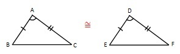
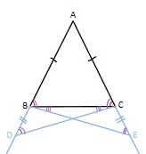
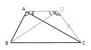
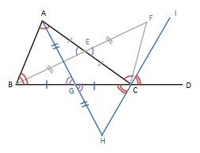
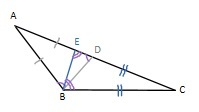
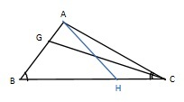

Comment: This is exceptionally unjustified.

If AB = DE and BC = EF and ∠ BAC = ∠ EDF, then triangles are congrugent
The angles opposite the equal sides are equal
If AC = AD and BC = BD then C = D
Two triangles who have sides of equal length are congruent.
If ∠ CBA + ∠ ABD sum to 2 right angles, CD is a straight line.
If 2 straight lines intersect, they make opposite angles equal to each other.
When one of the sides of a triange is extended, it creates an external angle bigger than either of the opposite interior angles.
The sum of any 2 angles of a triangle is less than 2 right angles.
In a triangle the longest Side Subtends the Biggest Angle
Suppose ∠ ABC > ∠ BCA and ∠ ABC > ∠ BCA and suppose
If triangles have two angles amd a side that are equal, the triangles are equal.
If a line falling across 2 straight lines makes:
[1] R Fitzpatrick. Euclid's Elements of Geometry. 2008. Available at: https://farside.ph.utexas.edu/books/Euclid/Elements.pdf . Accessed August 20, 2023.
[2]McMullen, Curtis T. Euclid's Postulates. 1997. Available at: https://people.math.harvard.edu/~ctm/home/text/class/harvard/113/97/html/euclid.html. Accessed August 31 2023.
[3] M R McCafferty. Euclid's Elements Book 1: Proposition 3, Constructing A Line 2. Euler's Academy. Available at: https://www.youtube.com/watch?v=_ZwcobIExto . Accessed August 31, 2023.
[5] M R McCafferty. Euclid's Elements Book 1: Proposition 7, Side Side Side Theorem 1. Euler's Academy. Available at: https://www.youtube.com/watch?v=iB_8u9-pVZ8 . Accessed August 20, 2023.
[6] M R McCafferty. Euclid's Elements Book 1: Proposition 18. Euler's Academy. Available at: https://www.youtube.com/watch?v=GP6K-2nvZ-Q&list=PL2V76rajvC1I2TrbPMRLcTqhdcbha4sDE&index=5" . Accessed August 20, 2023.